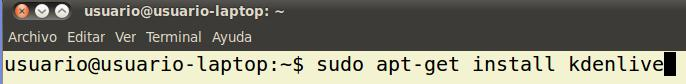
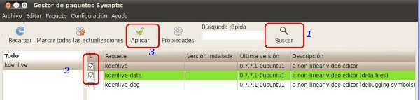
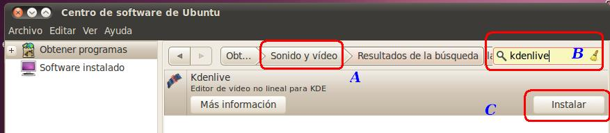

Edición de Audio y video
3. Instalación del Kdenlive
| INSTALACIÓN DEL KDENLIVE EN NUESTRO SISTEMA |
|
Disponemos de tres opciones, básicamente, para instalar nuestro programa en Ubuntu:
|
|  |
|
|  |
|
|  |
Recuerda que para la instalación de paquetes debes disponer de privilegios suficientes en el sistema.
En esta web encontraréis manuales y otros aspectos relacionados con este editor.
Jo.R.C.A. 2004 - 2011

Edición de Audio y Video con Software Libre by José Ramón Cerdeira Alonso is licensed under a Creative Commons Reconocimiento-No comercial-Compartir bajo la misma licencia 3.0 España License